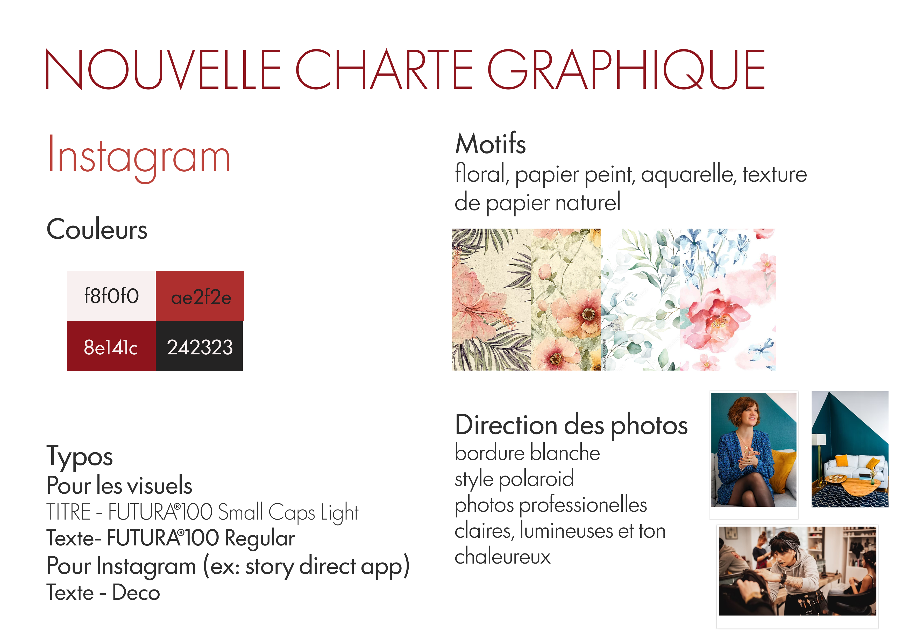
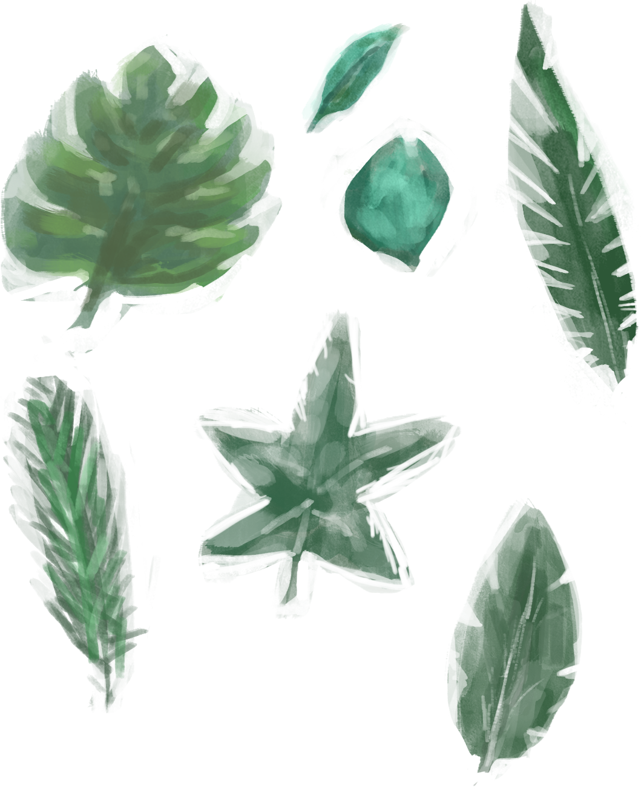
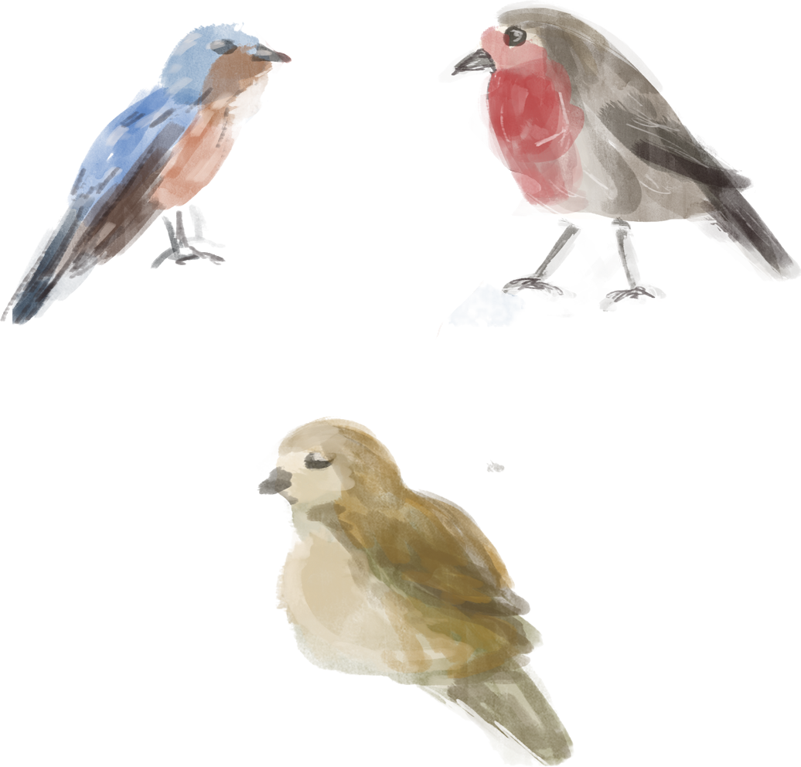

Coach Me ! ✦
Stratégie social media et refonte visuelle pour l'Agence Conseils de Brune.

Description du Projet
Ce projet consistait à accompagner l'Agence Conseils de Brune, coach en relooking bordelaise, dans l'optimisation de sa communication digitale. L'objectif était de réaliser une étude complète de son offre et de son marché afin de proposer un plan de communication stratégique sur les réseaux sociaux. La finalité était de créer une identité cohérente à travers quatre réalisations concrètes, dont une vidéo, pour dynamiser sa présence en ligne.
Méthodologie
Le projet a débuté par un audit complet de « L'Agence Conseils de Brune », une coach en relooking établie à Bordeaux depuis 2015. L'enjeu principal était de traduire son expertise de dix ans et ses valeurs humaines — altruisme, esthétisme et chaleur — en une stratégie digitale performante. L'analyse approfondie du profil client a révélé une offre extrêmement flexible, allant du diagnostic morphologique au shopping personnalisé, avec pour vocation ultime d'apporter du bien-être par l'image de soi. En étudiant le marché et la concurrence bordelaise, j'ai identifié le besoin d'unifier une identité graphique jusqu'alors fragmentée pour renforcer la crédibilité de l'agence. La problématique centrale consistait à accroître la visibilité et l'affinité de la marque tout en dynamisant son tunnel de conversion. L'analyse des KPIs a conduit à la définition d'objectifs clairs : montrer l'expertise personnalisée de la coach à travers des contenus à forte valeur émotionnelle pour transformer de simples visiteurs en clients fidèles. Cette phase d'analyse a été le socle indispensable pour concevoir une stratégie social media à la fois simple, rapide à appliquer pour la cliente, et redoutablement efficace pour son audience.
Pour ce faire, j'ai conçu un planning éditorial structuré selon un tunnel de conversion complet : accroître la visibilité (notoriété), instaurer la confiance (considération), déclencher l'acte d'achat (conversion) et maintenir le lien (fidélisation). Cette réflexion stratégique s'est traduite par une alternance précise de types de contenus, comme le choix d'un format fiction pour le Reel afin de favoriser l'identification de la cible, ou l'utilisation de preuves sociales via des posts "Retours".Sur le plan technique, l'approche a été guidée par une volonté d'unifier l'identité graphique. J'ai développé une charte visuelle utilisant des photos sobres, des textures de papier et des motifs aquarelles dessinés à la main sur Photoshop. Afin d'assurer la pérennité du projet, tous ces éléments ont été rendus utilisables dans Canva, permettant à la coach de maintenir une continuité visuelle de manière autonome après la fin de mon intervention.
Vidéo Reel (Fiction & Identité)
Post 1 : Présentation (5 slides)
Étape de notoriété pour le tunnel de conversion.


Post 2 : Look du Mois (6 slides)
Susciter la considération et la découverte.


Post 3 : Témoignages & Retours (4 slides)
Favoriser la conversion et la fidélisation.


Assets Graphiques & Textures
Éléments aquarelles et assets faits main pour l'identité visuelle.


Les Résultats & Impact
Le projet a abouti à une stratégie social media solide et un univers visuel très cohérent, salués pour leur justesse d'analyse. Bien que la coach ait chaleureusement remercié l'équipe pour la qualité des livrables et la fluidité de l'utilisation sur Canva, le contenu n'a finalement pas été déployé sur ses réseaux officiels. Ce travail reste néanmoins une preuve probante de capacité d'analyse de marché et de conception graphique sur-mesure.
"Un visuel très cohérent et un plan de communication solide." — Retour d'évaluation pédagogique